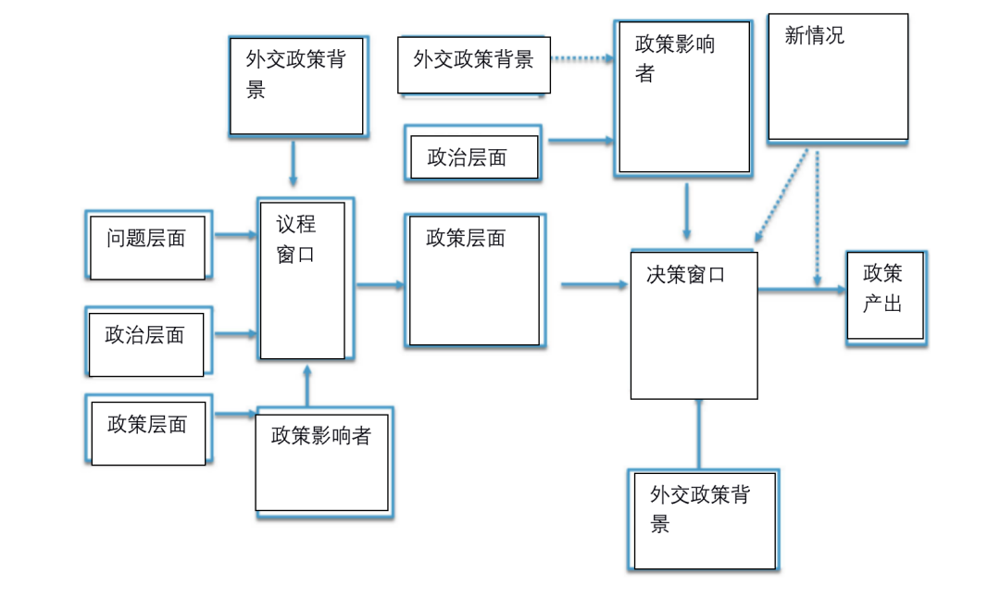

收录于合集

作品简介
作者： Dr. Jürgen Haacke ，现为伦敦政治经济学院的国际关系副教授，其研究范围为外交政策与安全问题关系以及东南亚政治及安全情况。
编译： 吴天麟（国政学人编译员，伦敦政治经济学院）
来源： Jürgen Haacke, Foreign Policy Entrepreneurs, Policy Windows, and “Pragmatic Engagement”: Reconsidering Insights of the Multiple Streams Framework and the Obama Administration’s 2009 Policy Shift Toward Military-Run Myanmar, Foreign Policy Analysis , Volume 17, Issue 3, July 2021, orab017. https://doi.org/10.1093/fpa/orab017
归档： 《国际关系前沿》2021年第9期，总第36期。
内容提要
此文主要有四个部分：第一部分介绍了约翰·金登（John Kingdon）的多流公共政策分析法（Multiple Streams Approach MSA）的三个层面，分别是问题、政策产生过程和政治背景层面，关键政策影响者（policy entrepreneur）的角色，以及MSA在外交政策分析中的用处。第二部分批判了MSA所提倡的政策窗口期（policy window）概念，主要批判了政策窗口期在学术中大小不变、处于不同条件下的窗口期被划一对待、忽略地缘政治或系统性变革以及忽视国际政治因素的缺点。第三部分提出了5个政策窗口期波动的可能因素。第四部分审视了2009年美国奥巴马总统上台后扭转美国以往对缅甸军政府的打压并转向接触的因素。
文章导读
01
多流公共政策分析法、政策影响者和外交政策制定
金登的多流公共政策分析法（MSA）认为辨认公共政策问题、制定公共政策和在特定社会政治条件下推行可以分为三个大层面；
第一是 问题层面 ，包含了政策制定者如何通过政策反馈或危机等突发事件把特定情况确认为公共政策问题。
第二是 政策产生层面 ，描述了各个政策群体（policy community）如何通过游说向政策制定者推销自身的政策思路和诉求。
第三是 政治层面 ，包括了当下的社会政治条件、各种有组织的政治团体及拉拢对象和政府政制上的变化。
在MSA分析框架中，以上三个层面的成功合拢创造了提供政策转向条件的政策窗口期。而政策影响者则是能过够借助自身能力推进三个层面合拢，直接导致政策变动、转向的代理人。政策影响者并不需要自身提出崭新的政治理念或政策，而是捕捉到成熟的政治条件和愿意接受、推进政策的群体，从而成功利用从窗口期推动政策的演变。政策影响者可以是内阁秘书、参议员、政治说客、学术代表、律师或官僚，但他们都需要成功地（1）定义并概念化复杂的问题；（2）打造一支强大而且富有相关专业知识的团队；（3）集结支持他们提议的证据；（4）创造一个多元化的政治联盟。
美国希腊裔政治学家Nikolaos Zahariadis 是把MSA公共政策分析法融入到外交政策分析的强力支持者，他认为外交政策是政策影响者在开放的政策窗口期期间结合问题、政策制定、政治条件后所推进的产物。尽管如此，金登的MSA分析法在外交政策领域中面临了许多问题。例如，有些人引用MSA分析美国外交政策制定过程中出现的各种政策团体和势力，忽视了政策影响者在政策制定过程中的影响和主动性。最主要的是，无论理论性还是实证性的论文都没有探讨过政策窗口期与外交议程设置和决策过程的关系。
02
批判政策窗口期的概念
在MSA模型里，政策窗口期是允许政策影响者提升特定政策建议到决策层面的重要机会，因此它们在MSA模型里享有中心地位。金登区别了两种政策窗口，分别是如选举轮替、领导人交接期和新闻报道周期等可预测的政策窗口期，而后者则是由政府突然变更、新多数政治联盟、群众舆论大幅度变动、灾难危机等问题和政治层面上变动的不可预测政策窗口期。
但是，作者认为此概念有4个大问题。第一，现存研究认为所有政策窗口期的长短一样，全部都能允许一个或数个政策影响者推动变革。然而，每个政策窗口都存在于不同的背景之下，不应给定一样的机会和长度，应该锚定与实时政治条件。第二，当人们划一审视所有政策窗口期，分析者将未能充分理解政策影响者的政治博弈技巧。成功利用小的和大的窗口对影响者政治敏锐度和技巧的需求差别甚大。第三，MSA分析架构里的政策窗口期是短暂的，但是许多政策窗口来自于大幅度的地缘政治或系统性变革，例如二战结束后推行的布雷顿森林体系规则。第四，MSA分析法中没有包含外交关系和国际政治为“政治”层面中的可能影响力。这说明了MSA分析法中的“政治”层面跟随了美式政治的定义，只捕捉了选举、党派、压力群体因素，与外交政策分析中国内- 国外因素相差颇大。
03
影响政策窗口期长短的因素
虽然政策窗口期的概念因其社会构建属性很难被程序化、操作化，但是作者认为足以令“一个国家改变现有双边关系的性质和方向，或影响与另外一个国家的双边关系”的政策窗口期通横跨选举前、当选后、新政府适应期所构成的前后1年“蜜月期”。而（至少在美国）决定此政策窗口长短的主要因素有4个，分别是 政策影响者的立场、政策竞争的强度与利益相关者的立场、现有政府对地缘政治的研判与现届政府的核心政策价值观或大战略。
第一， 政策影响者的立场：政策窗口期的长短取决于政策影响者自身的立场和与主要外交内政决策者的关系，具有“同天”直达关键领导的政策影响者自然拥有更大的优势，这会随着新政府上任时旧有网络的替换变得更容易。在美国，成功重启与被赋予公众关注的“被排斥的国家”（pariah state）的双边关系往往需要白宫高层甚至总统本人的支持。
第二， 现存政策的斗争程度：即便现存政策早已失效，如果有大量有关该政策有效性及道德问题的争论，政策影响者将面临利益相关者和关键人物的否决。这点对会产生强烈情感反应的“被排斥的国家”特别重要。
第三， 地缘政治研判：当下的地缘政治及安全研判和现今的地缘政治局势必定对政策窗口期有一定影响，虽然地缘政治压力普遍与大国博弈相关，但是中等国家关系中频繁出现地缘政治因素。例如，美国在南美洲和东南亚经常跳过“推广民主”的任务而选择培养右翼军人政府以抗衡苏联影响力。尽管冷战后的意识形态竞争没那么强，但是对中国崛起的忧虑的论调往往碾压美国对其它小国的政策考量。
第四， 大战略及政策理念：虽然大战略往往反映的是现今世界的相对力量平衡、战略威胁及安全考量，但也同时影射了外交政策背后的理念。大战略目的通常是稳定的，可是新政府经常选择重调现存外交和安全优先秩序。例如，克林顿政府选择了“民主放大化”和多边主义，布什政府强调的是单边主义、先发制人的军事行动和“和平演变”，奥巴马政府则选择了降低美国军事力量的投放烈度和适应新兴大国的理念。
此外，MSA分析法没有解释政策窗口在面临突发情况时的后果。国际政治风云多变，因新一届政府而生的政策窗口期可能会因突发国际情况而消亡。

图1：为外交政策制定而改动的MSA分析网络
04
美国重新接触缅甸
布什和克林顿年间美国长期视缅甸军政府为“独裁前哨”，并采取了大量经济制裁以及外交孤立的政策以胁迫缅甸军政府转向民主，可是长久以来的对缅政策未能“恢复民主”，反而在奥巴马上任后迎来了明显的政策转变。作者认为由于此外交案例未被放在外交政策创新（FP entrepreneurship）的角度下审视和没有美国重新接触缅甸的文献，所以值得深入探讨。以下将以政府交替、地缘政治、克林顿的大战略、缅甸局势动荡和政策影响者吉姆·韦伯（Jim Webb）众议员的政策影响应为（policy entrepreneurship）分析美国对缅甸政策转变。
总统换届与美国对缅甸政策
美国一向以来以高压制裁和国际孤立的政策未能“恢复民主”显示了此政策的穷途末路，也逐渐消磨掉美国在缅甸的影响力。奥巴马2008年上任为缅甸政策转向提供了政策窗口。时任美国国务卿希拉里长久以来对缅甸民主化运动持兴趣，但却认识到了旧有政策的不可持续性。
希拉里虽然得到了奥巴马团队关于“在重拾美国- 东盟关系下重新评估美缅关系”的指令，但是华府在大量人权组织、缅甸流亡反对派和国家民主基金会的游说下早已构成了向军政府“极限施压”的惯性，况且还有重磅共和党参议员麦康奈尔支持对缅甸施加压力停止“非民主”的措施。相反地，学者David Steinburg及前美国驻缅甸代办（chargé d’affaires）Priscilla Clapp开始质疑现存政策的有效性并提议重新接触缅甸。
从国务卿希拉里的角度来看，华府内外维持现存政策的政策群体及议员相对较多，与希望改变对缅甸政策的人产生了明显的政策冲突，大大缩减了可用的政策窗口。
地缘政治研判与大战略
自2000年初起，参议员吉姆·韦伯便在强调缅甸因美国高压政策而转向中国的战略后果。虽然韦伯的建议长期被忽视，但到了2000年中期有许多政策分析员与外交官认为美国在东南亚急速丧失影响力。现任美国国家安全委员会（NSC）印太政策协调员Kurt Campbell便在2006年提出“由于美国在中东的军事活动，美国将在中国大幅度进行军事现代化，在扩展外交、经贸影响力的背景下忽视东南亚的战略环境”，因此建议“美国大幅投资外交资本去改善美国于东盟地区漠不关心的形象”。这创造了美国对东亚的政策共识，因此影响了奥巴马政府对亚太的态度，要“体现美国的领导能力、地区影响、加强关系并构建多边主义机构”。所以，美国的目标时要与东盟（ASEAN）和东南亚国家发展更好的关系。
在此，地缘政治研判清楚地表明了转变对缅甸政策的逻辑。奥巴马的大战略从上任时的模糊不清状态变成“转向亚太”，并准备与流氓和被放逐国家重拾关系的状态。这为借用政策审查扭转现存缅甸政策提供了良好的机会。
希拉里的政策创新行为
从一开始，希拉里便通过拉拢时任副参谋长与国务院政策规划室主任苏利文和时任国家安全委员会副主任Ben Rhodes及共和党参议员麦康奈尔构建自己的联盟，加强国务院及两党之间对她政策转向的支持。同时，希拉里透过外交途径获取了时任印尼及新加坡领导人对其缅甸政策的支持，从国际- 国内层面上尽量扩大“问题”、“政策制定”和“政治”三个层面的连接性。扩大政策窗口期。希拉里所需的是缅甸方面企图改善双边关系的证据，以减轻“政治”层面上的舆论压力。
可是，随着昂山素季因美国游客Yettaw闯入事件[1]被多加3年的刑期及与朝鲜军事合作的迹象[2]，希拉里原先寻求的政策窗口因奥巴马总统及参众两院的强硬反映快速缩小。共和党元老麦凯恩参议员认为“昂山素季的判决显示有意义的接触政策对军政府来说是不重要的”，麦康奈尔随即提出“转变现有对缅甸政策尚未成熟”而且应“在军政府民主化前持续制裁行动”。尽管希拉里暗示“美国愿意在缅甸展现明显改善关系的措施后建立更为建设性的关系”，缅甸军政府依然宣布了对昂山素季及Yettaw的判决，基本上结束了对缅甸政策的窗口期的扭转局势。
韦伯的政策创新行为
恰在此时，参议员韦伯展现了他的价值。由于韦伯长期参与参议院东亚和太平洋事务外交关系小组委员会的活动，并自2008年起计划出访缅甸，他成为了“正向接触”的代表人。韦伯再2009年的个人出访有3个目标：第一，争取美国人Yettaw获释；第二，会见昂山素季；第三，与昂山素季及任何相关人员讨论她在缅甸未来政治中扮演的角色。幸运的是，韦伯此行成功令美国游客Yettaw获释，更会见了时任缅甸大将军丹瑞和时任军政府首相单盛，向缅甸领导人解释了昂山素季判决使得美国转变对缅甸政策变得困难，并确认了缅甸与美寻求更好关系的意愿，最后探望了囚禁中的昂山素季。缅甸军政府视韦伯到访为双边关系的转折点，随即释放了250余政治囚犯，以表现改善美缅关系的决心。
对于奥巴马政府来说它们只有两个选项，要么无前提缩减制裁并展开接触，要么更谨慎、缓慢地展开接触。介于非政府组织、众议院及流亡者群体的压力，奥巴马政府只好选择了第二选项，缓慢地展开对缅甸的重新接触。因此，尽管美方展开外交接触也没有放弃经济制裁措施。坎贝尔向国会作证时，认为由于以往（1）制裁孤立措施无效；（2）缅甸构成了对地区及世界的问题；（3）缅甸与北韩来往密切；（4）缅甸领导人有意与美接触，所以应该展开接触政策。
05
结论
美国于2009年重新接触缅甸的案例展现了给予希拉里政策窗口期的波动，尽管希拉里的政治地位、东亚地缘政治变动、美国大战略“转向亚太”为美国- 缅甸关系修正提供了许多机会，但是成功利用该政策窗口依然依赖于韦伯参议员等数个关键政策影响者的政策创新行为。而美国游客Yettaw闯入事件等突发事件展现了政策窗口应对突发情况时急速缩小的现象。从学术角度来看，为外交政策窗口提供政治社会背景并加入突发情况可能是有效把MSA分析法纳入外交政策分析的途径，避免过度延申MSA分析法的分析架构。
译者评述
外交政策制定相较于均势等宏观国际关系理论预测有相当的一段距离，也是国际关系学中较为微观的一面。此篇文章有效地从一个外交政策转型的案例中剥离出数个影响政策窗口期的可能因素并且结合了危机处理的层面审视官员们政治操作的过程。更重要的是，通过引入MSA公共政策分析法的三流模型，国际关系学者可以依赖现有决策模型融合国内政治或公共政策制定过程的因素，从而得到对政府运作更为广泛的了解。
但是此篇文章没有脱离外交政策分析的学术问题，此文所以提出的4、5个可能改变决策过程的因素高度依附于此案例中的过程和官员行为，很难形成在学术上“好用”的预测分析架构。另一方面来说，此文也没有涉及到官员心理因素、风险承受程度在决策过程中的影响以及由宏观地缘政治研判和宏观国关理论主宰的大战略与外交政策制定过程中的影响比重。此文没有把外交政策分析学与更为宏观的国际关系理论接轨，也避开了难缠的“心理决策还是现实主义研判“在外交政策中更为常用的话题。无论如何，作者引用公共政策分析中的MSA很好地加入了尝试融合国内政治环境、政府内部、国际政治条件的分析架构，为政策制定者们提供了一个理解华府在此时间上内部逻辑的良好案例。
注释
[1]美国游客Jim Yettaw于2009年5月3日非法游往昂山素季的拘留地并于3天后折返期间被捕，昂山素季被缅甸政府指控违反了她的囚禁条件，在Yettaw第一次游到她家中时以“过度疲累”的理由允许Yettaw滞留她家中。缅甸军政府随后威胁将昂山素季处以5年单独囚禁的惩罚，并给予Yettaw7年刑期。
[2]朝鲜在2009年5月进行核试验后一个月将货船“康南1号”派往缅甸，美国安全官员担心朝鲜扩散其导弹及核弹技术。
词汇整理
政策影响者 （Policy Entrepreneur）
政策窗口期 （Policy Window）
政策群体 （Policy Community）
外交政策创新 （Foreign Policy Entrepreneurship）
被排斥的国 家 （Pariah State）
代办 （Chargé D’Affaires）
审校 | 常佳艺 胡瑞琨
排版 | 陆霜滢 游钜家
文章观点不代表本平台观点，本平台评译分享的文章均出于专业学习之用, 不以任何盈利为目的，内容主要呈现对原文的介绍，原文内容请通过各高校购买的数据库自行下载。

国政学人
支持学术公益与知识传播
微信扫一扫赞赏作者 __赞赏
已喜欢，对作者说句悄悄话
取消 __
发送给作者
发送
最多40字，当前共字
上一页 1/3 下一页
长按二维码向我转账
支持学术公益与知识传播
受苹果公司新规定影响，微信 iOS 版的赞赏功能被关闭，可通过二维码转账支持公众号。